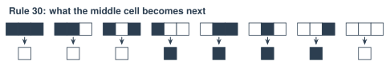
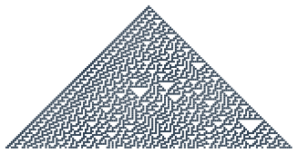

2.1 - Simple Rules, Complex Behavior
In Unit 1, rules failed. Nobody could write rules for “cat.”
But rules have a surprise. A very simple rule can make something very complicated. Nobody plans it. It just happens.
Your brain works a little like this. Each brain cell follows simple rules. About 86 billion of them together make you. Today, you become the cells.
Today’s Plan (40 minutes)
- 🔥 Warm Up Make a wave 5 min
- 👥 Learn Together One row, one rule 8 min
- 🛠️ Try It Be Rule 30, then watch Life 20 min
- 💬 Talk About It Can simple make smart? 7 min
- 🔲 cellular automaton: a row or grid of cells that change color by following a rule
- 🌊 emergence: when many simple parts together make something complicated that no one planned
- 🎲 random: with no pattern, so you can’t guess what comes next
- 📏 rule: an exact instruction, like “If this happens, do that.”
Printable lesson sheet - the sheet you write on today.
🔥 Warm Up
Watch a crowd make a wave. Every person follows one rule:
When the person on your left raises their hands, raise your hands. Put them down quickly.
- Press Start the wave.
- Turn on Watch one person and start it again. Does that person move down the row? Then what moves?
- Turn on One person ignores the rule. What happens to the wave?
If there’s time, try it yourselves. Sit in a row and follow the same rule. Even 4 people can pass a small wave.
Nobody! Each person only watched one neighbor. The person you watched only went up and down. The wave moved across the row, but no person did.
When many simple parts make something bigger that nobody planned, we call it emergence.
👥 Learn Together
2.1.1 - One Row, One Rule
Stephen Wolfram started Wolfram Research, the company that makes the math program Mathematica. He spent years on one question: how can very simple rules make very complicated things? He studied rows of squares like this one.
Picture a row of squares. Each square is black or white. Every square looks at itself and its two neighbors. Then the rule card says what color it will be in the next row.

There are only 8 possible patterns of 3 squares. So a rule card has 8 answers. This card is called Rule 30. A world like this is called a cellular automaton.
2.1.2 - Rule 30
Wolfram studied Rule 30 in 1983. Here it’s after 80 rows, starting from one black square:

The rule is tiny. But the middle of the picture looks random. Even Wolfram can’t say what row 1,000 will look like. The only way to know is to make all 999 rows before it.
Simple rules can make behavior that is just as complicated as anything else. Wolfram calls this the Principle of Computational Equivalence. He thinks a row of cells, the weather, and a brain can all be equally complicated. Not every scientist agrees.
This matters for AI. A neural network is made of tiny parts that follow simple rules. So is your brain.
🛠️ Try It
2.1.3 - Be Rule 30
The class becomes a row of cells. Each time the caller says “Go!”, the same row turns into the next row.
- Each cell gets a paper that’s black on one side and white on the other. Stand in a row. (Small class? Put 15 papers in a row on the desks. Each person is in charge of 3 or 4 of them.)
- Start with only the middle cell black. Everyone else shows white.
- Each cell: look at your left neighbor, yourself, and your right neighbor. Find the same 3 colors on the Rule 30 card. That’s your color in the next row. Don’t flip your paper yet! (The ends of the row have a white neighbor outside.)
- The caller says “Ready … Go!” Everyone flips to their new color at the same time. Now the class shows the next row.
- The recorder presses Show the next row in the tool below. Does the class match? Everyone colors the row on their sheet too.
- Do at least 6 rows. Then finish 10 rows on your sheet with a partner.
On paper, each new row goes under the old one, so the old row is still there. Here, the class is the only row. When you flip your paper, your old color is gone. If you flip early, a neighbor who’s still deciding sees your new color and gets the wrong answer.
2.1.4 - Watch the Game of Life
The Game of Life is a grid, not a row. Each square follows simple rules about its 8 neighbors. Your teacher shows it on the projector.
- Your teacher chooses The Game of Life, adds a glider, and presses Run.
- Watch the glider. What does it do?
- Look closely at one square. Does it move?
The rules. Every cell looks at its 8 neighbors. ⬛ A black cell with 2 or 3 black neighbors stays black. Otherwise it dies (turns white). ⬜ A white cell with exactly 3 black neighbors is born (turns black).
Click a square to make it black or white.
No! Each cell stays in its place. It only turns black or white. The “glider” is a pattern that moves, like the wave in the Warm Up.
💬 Talk About It
A brain cell follows simple rules. A part of a neural network follows simple rules. Can simple parts make something smart?
- I think simple rules can / cannot make something smart, because …
- The wave and Rule 30 are alike because …
- A brain is / is not just simple rules, because …
🚀 Go Further
Use the rules tool in 2.1.4, with a partner.
- Press Draw it for Rule 30. Does it match your sheet?
- Try the other rules: 90, 110, 4, 184, 150. Which one makes chaos? Which one makes a pattern that repeats?
- Make your own rule. Click the answer squares on the rule card. What is your rule’s number?
- Switch to The Game of Life. Try to build 3 patterns: one that never changes, one that blinks, and one that moves like the glider.
Make Rule 30 on a table with paper cups: cup up is white, cup down is black. Make 6 rows. Ask your teacher to take a photo of your table.
🏫 At school: watch this video on yout-ube.com
John Conway, the mathematician who made the Game of Life in 1970, tells how he invented it.
Captions in your language: Press CC, then ⚙️ Settings, then Subtitles/CC, then Auto-translate.
🔭 Explore More: different rule cards, and Rule 30 in the real world. Read it on your own, if you want to learn more.